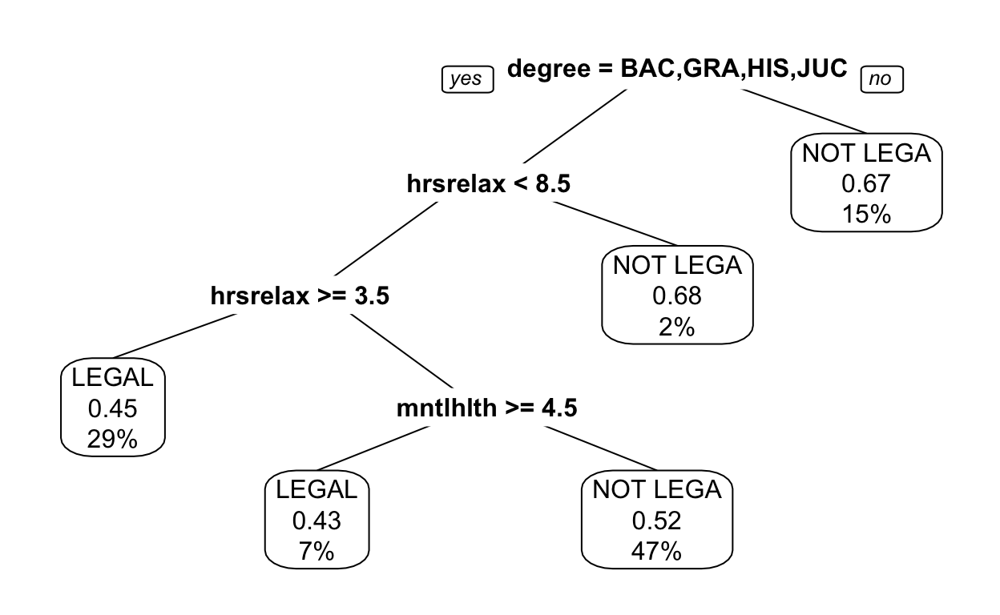

We do a lot of counting in introductory statistics. More precisely, because counting is something that’s easy to do, we present data in count and proportion form. For instance, here’s a textbook problem from the Open Intro Stats book.
Problem 3.12. The 2010 General Social Survey asked 1,259 US residents: “Do you think the use of marijuana should be made legal, or not?” 48% of the respondents said it should be made legal. a. Is 48% a sample statistic or a population parameter? Explain. b. Construct a 95% confidence interval for the proportion of US residents who think marijuana should be made legal, and interpret it in the context of the data. c. A critic points out that this 95% confidence interval is only accurate if the statistic follows a normal distribution, or if the normal model is a good approximation. Is this true for these data? Explain. d. A news piece on this survey’s findings states, “Majority of Americans think marijuana should be legalized.” Based on your confidence interval, is this news piece’s statement justified?
The “data” provided in the problem are a count, n=1259, and a proportion, p = 0.48. With such “data,” statistics is pretty much restricted to problems calculating confidence intervals.
The Open Intro organization provides an R package giving the General Social Survey data frame in detail as a tidy data frame. Let’s start with that … the name of the data frame is gss2010. In the next command chunk, you can give commands to take a quick look at the data frame, such as names(), nrow(), glimpse(), and head().
gss2010You might be interested to know what the variables stand for. Fortunately, there is metadata which you can access with the command help(gss2010).
tally()A MOSAIC function for counting is tally(). It follows the usual MOSAIC command template:
goal(formula, data = data_frame)The data frame here is named gss2010. All you have to do to count the answers regarding marijuana is to create the appropriate formula. Since the relevant variable is called grass, the formula will be ~ grass.
tally( ~ grass, data = gss2010)Slightly less than one-third of the survey respondents answered yes to the question about legalizing marijuana. For slightly more than one-third, no answer at all was recorded. It would be very helpful to know, when interpreting the survey in political and social terms, whether NA means the respondent wasn’t asked the question or whether the respondent expressed no opinion.
tally() to report the results as a proportion or percentage:
tally( ~ grass, data = gss2010, format = "proportion")And you can specify that you don’t want to count the missing data:
tally( ~ grass, data = gss2010, format = "proportion", useNA = "no")Are there different groups of people in the survey holding different attitudes about legalizing marijuana? Or, put another way,
Can any of the other variables explain the answer recorded in
grass?
This tutorial is about counting, so for the moment we’ll stick to the categorical variables: grass and degree. But do keep in mind that there are more general frameworks for describing the relationship among variables.
Cross tabulation with tally() involves constructing a formula with two variables. There are essentially three ways to do this:
grass ~ degree which reads “the different groups in grass broken down by degree.” Another way to say this is “grass conditioned on degree,” or “grass given degree.”~ grass + degree which is different. It means break down the whole survey by these two variables.For counts, these two formulas produce the same result. But for proportions and percent the formulas give different results.
~ grass + degree gives joint probabilitiesgrass ~ degree gives conditional probabilitiesTry out both styles of formula, both as counts and as proportions.
tally(~ grass + degree, data = gss2010)By looking through the tables, you’ll be able to find one degree level where the attitudes toward marijuana are different from the others.
Try the tally() arguments useNA = "no" and margins = TRUE to see variations on the basic output.
Tabulating and cross-tabulating data are very common procedures, and the statistical interpretation of such tabulations (compare two means, compare two proportions) is at the core of many statistics courses.
Still, the real question of interest is how we can explain or account for person-to-person differences in attitude toward legalization. An important class of statistical methods – called variously “predictive modeling,” “statistical learning,” or “machine learning” – allows us to explore how one variable is related to others.
To illustrate, let’s look at a machine-learning technique called “recursive partitioning” which constructs a tree model of the outcome. The technique is no more difficult to carry out than simple counts. Constructing the model uses the standard template:
The dot in the formula grass ~ . stands for “all the other variables.” Let’s see what we find.
The machine learning algorithm searches over different combinations of the explanatory variables. It found three that are predictive of attitude toward legalization: degree, hours of relaxation, and number of days in a month that mental health was not good. Here’s a graph of the model.

To predict a person’s attitude toward legalization, first look at their degree. If it’s not one of high-school, 2-year (“junior”), bachelors, or graduate degree then there’s a two-thirds chance that the attitude will be against legalization. The only such level is “less than high school.” Perhaps this is counter-intuitive. Evidently, the high-school drop-outs are not all stoners!
For a person with a high-school degree or higher, the modeling process found that having more than 8.5 hours-to-relax each day is predictive of opposition to legalization. Again, counter-intuitive. With all that free time, shouldn’t people have some time spare to take a hit?
The model goes a little further, to examine days with poor mental health: people with more than 4.5 such days a month are about evenly split on legalization.
Why are people with no high-school degree and with lots of relaxation time predominantly against legalization? Here’s one theory: It’s about age. People without high-school degrees are older on average, which is to say that older people grew up in a time when a small fraction of people graduated high school. Similarly, people with a lot of relaxation time include the retired: older people. If this theory is true, the political implications are substantial, since eventually today’s old people will be replaced by young people holding different attitudes toward legalization.
If only the data frame included the respondent’s age, which was certainly in the data collected by the General Social Survey! Then we could have included age directly in the model and the theory could have been tested. It’s important to think about covariates when collecting data.